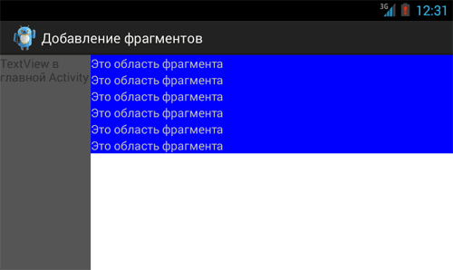
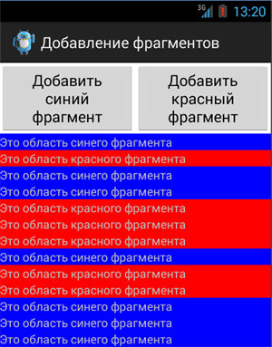

/* Моя кошка замечательно разбирается в программировании. Стоит мне объяснить проблему ей - и все становится ясно. */
John Robbins, Debugging Applications, Microsoft Press, 2000

/* Моя кошка замечательно разбирается в программировании. Стоит мне объяснить проблему ей - и все становится ясно. */
John Robbins, Debugging Applications, Microsoft Press, 2000
Рассмотрим программное добавление фрагмента в активность. Суть состоит в следующем. В разметке активности нельзя прописывать тег fragment, так как в этом случае Android не сможет менять фрагменты динамически. Воспользуемся LinearLayout как контейнером и будем его заменять программно на нужный фрагмент.
<?xml version="1.0" encoding="utf-8"?>
<LinearLayout xmlns:android="http://schemas.android.com/apk/res/android"
android:layout_width="fill_parent"
android:layout_height="fill_parent"
android:orientation="horizontal" >
<TextView
android:layout_width="0px"
android:layout_height="match_parent"
android:layout_weight="1"
android:background="#555555"
android:text="TextView в главной Activity" />
<LinearLayout
android:orientation="vertical"
android:id="@+id/container"
android:layout_width="0px"
android:layout_height="match_parent"
android:layout_weight="4" />
</LinearLayout>
LinearLayout с идентификатором @+id/container является нашим контейнером. Подготовим класс фрагмента. Разметку для фрагмента использовать не будем, всё сделаем программно.
package ru.alexanderklimov.test;
import android.app.Fragment;
import android.content.Context;
import android.graphics.Color;
import android.os.Bundle;
import android.view.LayoutInflater;
import android.view.View;
import android.view.ViewGroup;
import android.widget.LinearLayout;
import android.widget.TextView;
public class MyFragment extends Fragment {
@Override
public View onCreateView(LayoutInflater inflater, ViewGroup container,
Bundle savedInstanceState) {
// TODO Auto-generated method stub
Context context = getActivity().getApplicationContext();
LinearLayout layout = new LinearLayout(context);
layout.setBackgroundColor(Color.BLUE);
TextView text = new TextView(context);
text.setText("Это область фрагмента");
layout.addView(text);
return layout;
}
}
Мы закрасили фрагмент синим цветом, добавили текстовую метку и вывели текст.
Осталось добавить код в метод onCreate() основной активности. Нам нужно получить экземпляр класса FragmentTransaction и добавить фрагмент в контейнерный LinearLayout.
package ru.alexanderklimov.fragment;
import android.app.Activity;
import android.app.Fragment;
import android.app.FragmentManager;
import android.app.FragmentTransaction;
import android.os.Bundle;
public class FragmentDemoActivity extends Activity {
/** Called when the activity is first created. */
@Override
public void onCreate(Bundle savedInstanceState) {
super.onCreate(savedInstanceState);
setContentView(R.layout.main);
// получаем экземпляр FragmentTransaction
FragmentManager fragmentManager = getFragmentManager();
FragmentTransaction fragmentTransaction = fragmentManager
.beginTransaction();
// добавляем фрагмент
MyFragment myFragment = new MyFragment();
fragmentTransaction.add(R.id.myfragment, myFragment);
fragmentTransaction.commit();
}
}
В примере мы добавляли фрагмент в контейнер. Если у вас фрагментов несколько и их нужно выводить в одном месте, то их нужно не добавлять в контейнер, а замещать. Подробнее в статье Замещение фрагментов.
Также следует обращать внимание на поведение фрагмента при поворотах экрана. Для статичных фрагментов это не является проблемой, так как активность сама позаботится о восстановлении своих элементов разметки.
Для динамических фрагментов возможно ситуация, что при восстановлении активности будет создаваться второй экземпляр фрагмента. Если вы ещё не закрыли предыдущий пример, то поверните экран в другую ориентацию. При повороте будет создана новая активность, которая создаст новый фрагмент. Верните устройство в обратное положение и снова активность создаст новый фрагмент.
После шести поворотов приложение будет выглядеть следующим образом:

Тут нам пригодится параметр Bundle в методе активности onCreate(). Если его значение равно null, значит мы впервые запускаем активность и можем спокойно создавать новый экземпляр фрагмента. Помещаем наш код в блок if:
public void onCreate(Bundle savedInstanceState) {
// ...
if (savedInstanceState == null) {
FragmentManager fragmentManager = getFragmentManager();
FragmentTransaction fragmentTransaction = fragmentManager
.beginTransaction();
// добавляем фрагмент
MyFragment myFragment = new MyFragment();
fragmentTransaction.add(R.id.container, myFragment);
fragmentTransaction.commit();
}
}
В нашем примере фрагмент не использует разметку и метод onCreateView() для него необязателен. Вы можете добавить фрагмент в активность также через метод FragmentTransaction.add(Fragment, String), передав методу уникальную строку для идентификации нужного фрагмента.
FragmentManager fragmentManager = getFragmentManager()
FragmentTransaction fragmentTransaction = fragmentManager.beginTransaction();
BackgroundFragment fragment = new BackgroundFragment();
fragmentTransaction.add(fragment, "thread_manager");
fragmentTransaction.commit();
В первом примере создание новых фрагментов носило неуправляемый характер. Рассмотрим пример, когда мы сознательно хотим добавлять фрагменты в активность.
Изменим немного разметку, добавив две кнопки:
<?xml version="1.0" encoding="utf-8"?>
<LinearLayout xmlns:android="http://schemas.android.com/apk/res/android"
android:layout_width="match_parent"
android:layout_height="match_parent"
android:orientation="vertical" >
<LinearLayout
android:id="@+id/linearlayout"
android:layout_width="match_parent"
android:layout_height="wrap_content" >
<Button
android:id="@+id/button1"
android:layout_width="0dp"
android:layout_height="wrap_content"
android:layout_weight="1"
android:onClick="onClick"
android:text="Добавить синий фрагмент" />
<Button
android:id="@+id/button2"
android:layout_width="0dp"
android:layout_height="wrap_content"
android:layout_weight="1"
android:onClick="onClick"
android:text="Добавить красный фрагмент" />
</LinearLayout>
<LinearLayout
android:id="@+id/container"
android:layout_width="match_parent"
android:layout_height="wrap_content"
android:orientation="vertical" />
</LinearLayout>
Мы будем динамически добавлять два разных фрагмента. Переименуйте класс MyFragment в BlueFragment и создайте его копию под именем RedFragment. Измените код во втором фрагменте, чтобы область заливалась красным цветом.
Логика приложения теперь будет сосредоточена в методе onClick(), который отвечает за нажатия кнопок:
package ru.alexanderklimov.test;
import ...
public class TestActivity extends Activity {
private FragmentManager mFragmentManager;
private FragmentTransaction mFragmentTransaction;
/** Called when the activity is first created. */
@Override
public void onCreate(Bundle savedInstanceState) {
super.onCreate(savedInstanceState);
setContentView(R.layout.activity_test);
mFragmentManager = getFragmentManager();
}
public void onClick(View v) {
mFragmentTransaction = mFragmentManager.beginTransaction();
switch (v.getId()) {
case R.id.button1:
BlueFragment bluefragment = new BlueFragment();
mFragmentTransaction.add(R.id.container, bluefragment);
break;
case R.id.button2:
RedFragment redfragment = new RedFragment();
mFragmentTransaction.add(R.id.container, redfragment);
break;
}
mFragmentTransaction.commit();
}
}
Запускаем проект и щёлкаем по кнопкам в произвольном порядке.
